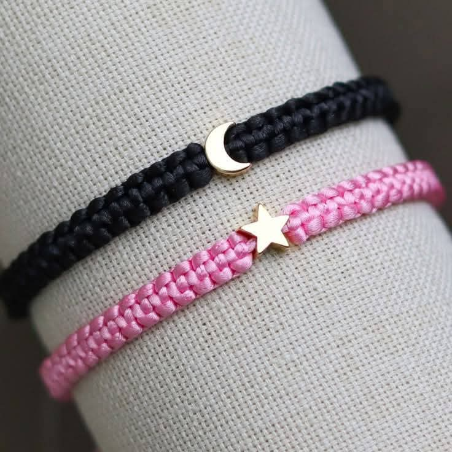

Línea Minimalista
Diseños sencillos perfectos para el día a día. Hilos de algodón natural y colores tierra. Elegancia en la simplicidad.
Explorar ClásicosDonde cada nudo cuenta una historia. Explora nuestras pulseras de macramé hechas a mano con dedicación y pensamiento hermoso.
Explorar ColecciónDiseños sencillos perfectos para el día a día. Hilos de algodón natural y colores tierra. Elegancia en la simplicidad.
Explorar Clásicos
Explosión de color y patrones elaborados con nudos festón y doble enganche. La pieza ideal para destacar tu look.
Ver ColoresCrea tu propia pulsera eligiendo colores, nudos y detalles. Un regalo único y totalmente a tu gusto. ¡Hazla especial!
Personalizar AhoraCada pulsera está hecha con amor, paciencia y materiales de primera calidad. Creemos en el valor de lo artesanal y en la energía positiva que transmite cada pieza única.